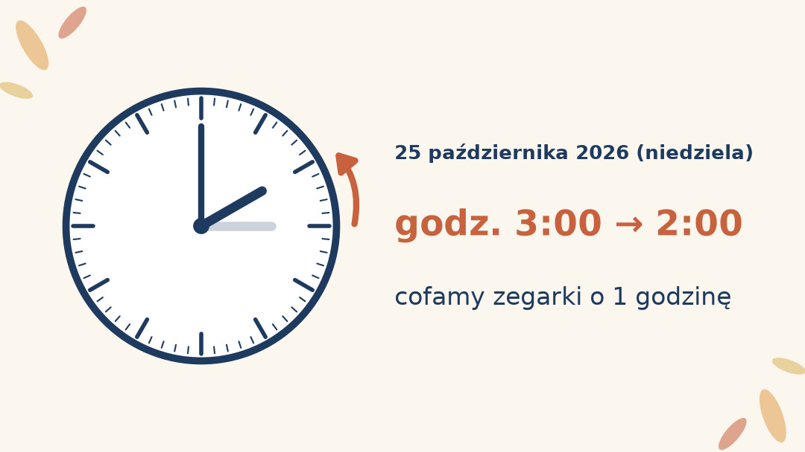
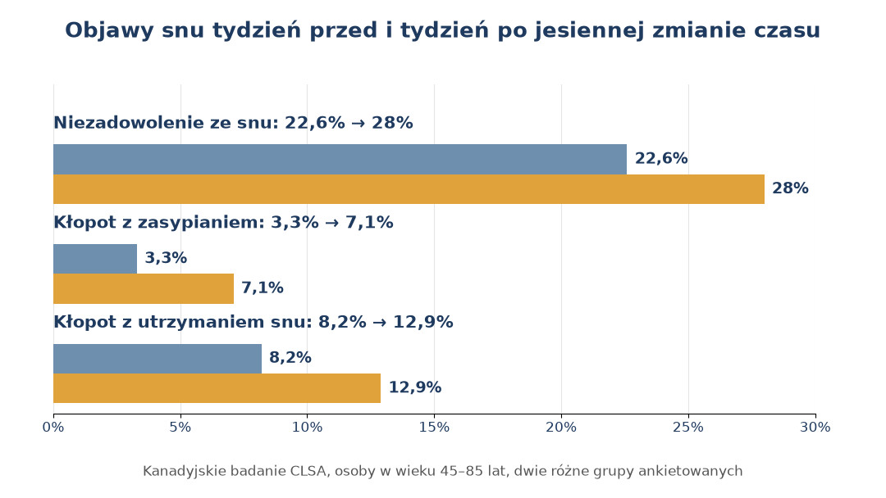
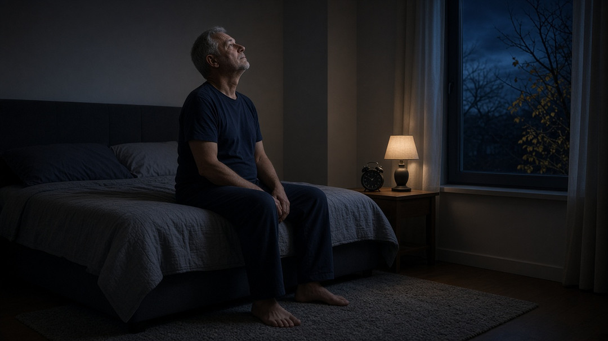
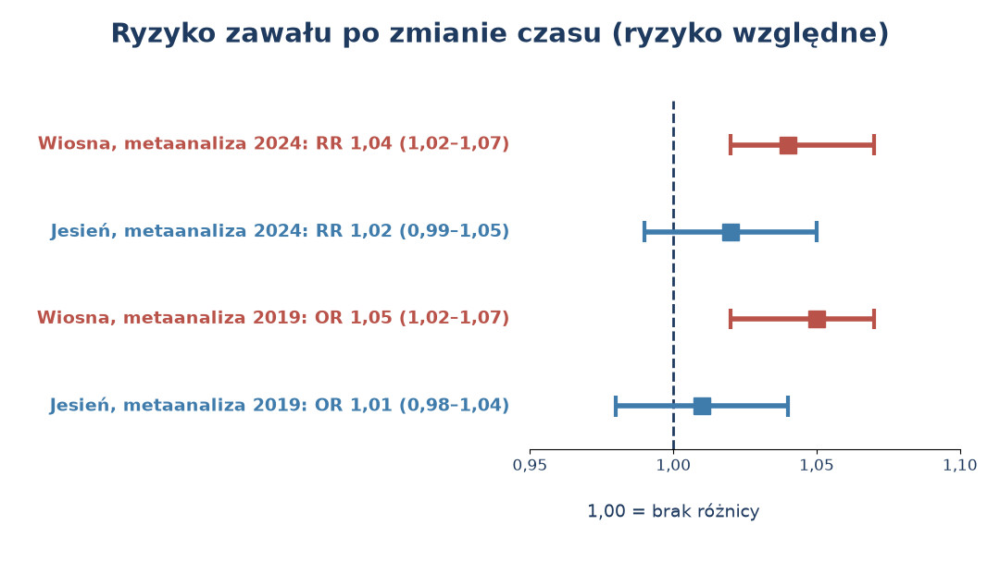
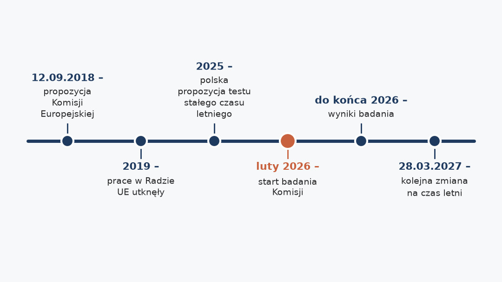

Godzina snu więcej brzmi jak prezent, ale wiele osób po pięćdziesiątce zna drugą stronę tej nocy: budzik niepotrzebny, bo oczy otwierają się same, długo przed świtem, a zmrok łapie już w drodze z pracy. Sprawdziliśmy w przepisach i badaniach, co jesienna zmiana czasu naprawdę robi z organizmem, czego się nie bać, na co uważać i czy ten zwyczaj ma przed sobą jeszcze wiele lat.
Szybka odpowiedź
Zmiana czasu na zimowy w Polsce nastąpi w niedzielę 25 października 2026 roku: o 3:00 cofamy zegarki na 2:00. U osób po 50-tce pierwsza noc bywa dłuższa, ale przez kilka dni częściej zdarzają się wczesne pobudki i gorszy sen. Metaanalizy nie pokazują po jesiennej zmianie istotnego wzrostu ryzyka zawału, a dane o nastroju są niejednoznaczne.
Kluczowe wnioski
- Zegarki cofamy w niedzielę 25 października 2026 roku o 3:00 na 2:00; to ostatnia data zapisana w obowiązującym polskim rozporządzeniu, ale nie koniec zmian czasu.
- Pierwsza noc zwykle jest dłuższa, jednak w kolejnych dniach część osób po 45. roku życia zgłasza gorszy sen i trudniejsze zasypianie.
- Metaanalizy nie pokazują po jesiennej zmianie istotnego wzrostu ryzyka zawału; słaby sygnał dotyczy wiosny, a badania nastroju dają sprzeczne wyniki.
- Najwięcej da światło dzienne, stała pora wstawania, odblask na spacerze po zmroku i żadnych samodzielnych zmian w lekach.
Kiedy zmiana czasu na zimowy w 2026 roku?
W nocy z soboty na niedzielę, 25 października 2026 roku, o godzinie 3:00 czasu letniego cofamy zegarki na 2:00. Wracamy wtedy do czasu środkowoeuropejskiego, a noc trwa o godzinę dłużej.
Godzina między 2:00 a 3:00 zdarza się tej nocy dwa razy. Polskie rozporządzenie oznacza jej drugie wystąpienie dodatkową literą „a”, od 2a:01 do 3a:00, a potem następuje 3:01. Zegary bez automatycznej synchronizacji, na przykład w piekarniku, w samochodzie czy w zwykłym budziku, trzeba przestawić ręcznie.
Sama nazwa „czas zimowy” jest potoczna. Ustawa o czasie urzędowym mówi, że czasem urzędowym w Polsce jest czas środkowoeuropejski albo czas letni środkowoeuropejski w okresie od jego wprowadzenia do odwołania. Jesienią nie wchodzimy więc w żaden specjalny tryb, tylko kończymy czas letni.
Data 25 października 2026 roku to ostatnia zmiana zapisana w obowiązującym rozporządzeniu Prezesa Rady Ministrów, które obejmuje lata 2022–2026. Nie oznacza to, że przestawiamy zegarki po raz ostatni. Kancelaria Premiera ma w wykazie prac projekt nowego rozporządzenia na lata 2027–2031 z planowanym terminem wydania w I kwartale 2027 roku. To projekt, a nie obowiązujące prawo; szczegóły unijnego harmonogramu opisujemy w części o znoszeniu zmian czasu.

Czy po zmianie czasu na zimowy śpimy dłużej?
Pierwszej nocy zwykle tak, choć rzadko o pełną godzinę. W brytyjskim badaniu UK Biobank 11 780 osób w wieku 43–78 lat nosiło na nadgarstku czujniki ruchu. W niedzielę jesiennej zmiany sen trwał średnio o 33 minuty dłużej niż w niedzielę tydzień wcześniej.
Kolejne dni wyglądają mniej różowo. Kanadyjskie badanie CLSA objęło 30 097 osób w wieku 45–85 lat; porównano w nim odpowiedzi 588 osób ankietowanych w tygodniu przed jesienną zmianą i 573 osób ankietowanych tydzień po niej. Po zmianie niezadowolenie ze snu zgłaszało 28% badanych wobec 22,6% przed nią, kłopot z zasypianiem 7,1% wobec 3,3%, a z utrzymaniem snu 12,9% wobec 8,2%.
Te odsetki dotyczą dwóch różnych grup ankietowanych w jednym momencie, a nie tych samych osób obserwowanych przez tydzień. Autorzy opisują zjawisko jako przejściowy wzrost zaburzeń snu. Nawet po zmianie większość ankietowanych nie zgłaszała tych kłopotów.
Szerszy obraz jest mniej jednoznaczny. Przegląd systematyczny z 2026 roku, który objął 157 badań z 36 krajów, stwierdza, że zbyt mało badań pozwala wyciągać jasne wnioski o innych parametrach snu i o rytmie dobowym. Krótkie wahania snu po zmianie czasu są więc prawdopodobne, ale nie da się przewidzieć, jak przejdzie je konkretna osoba.

Dlaczego po zmianie czasu budzisz się za wcześnie?
Wewnętrzny zegar nie przestawia się razem z zegarkiem. Jeśli zwykle budzisz się o 6:00, po cofnięciu wskazówek organizm może cię obudzić około 5:00 według nowego czasu, bo dla niego to wciąż ta sama pora co tydzień wcześniej.
Po pięćdziesiątce bywa to bardziej odczuwalne. MedlinePlus zwraca uwagę, że starsi dorośli zwykle wcześniej kładą się spać i wcześniej wstają niż młodsi. W laboratoryjnym badaniu 16 zdrowych osób w wieku średnio 66,5 roku miało wcześniejszą fazę rytmu melatoniny niż 29 osób w wieku średnio 25,1 roku. Cofnięcie zegarka nakłada się więc na naturalnie wczesny rytm.
Wczesne pobudki nie zawsze są winą zegarka. Według NIA starsi dorośli częściej przyjmują leki i mają choroby, które wpływają na sen, a dobry sen utrudniają też ból i stan psychiczny.
Kilka gorszych nocy po zmianie czasu to co innego niż problem, który trwa. MedlinePlus radzi porozmawiać z lekarzem, gdy stale jesteś senny albo trudno ci się wyspać. NHS określa bezsenność trwającą co najmniej trzy miesiące jako długotrwałą.

Czy jesienna zmiana czasu szkodzi sercu?
Według dwóch metaanaliz jesienna zmiana czasu nie podnosi wyraźnie ryzyka zawału serca. Słaby, ale statystycznie istotny sygnał dotyczy wiosny, kiedy zegarki przesuwamy z 2:00 na 3:00.
Metaanaliza z 2024 roku zebrała 12 badań z 10 krajów. Po wiosennej zmianie czasu ryzyko względne zawału wyniosło 1,04, czyli około 4% więcej niż w okresach porównawczych. Po jesiennej wyniosło 1,02, ale przedział ufności sięgał od 0,99 do 1,05, więc mieści się w nim także brak jakiejkolwiek różnicy. Po wyłączeniu jednego niespójnego badania jesienny wynik spadł do 1,00.
Starsza metaanaliza z 2019 roku objęła siedem badań i ponad 115 tysięcy osób. W tygodniu po jesiennej zmianie częstość zawałów była porównywalna z okresami kontrolnymi, a iloraz szans wyniósł 1,01. Autorzy sprawdzali też wyniki w podziale na wiek i płeć i nie znaleźli istotnych różnic.
| Metaanaliza | Po wiosennej zmianie | Po jesiennej zmianie |
|---|---|---|
| 2024, 12 badań z 10 krajów | RR 1,04 (1,02–1,07) | RR 1,02 (0,99–1,05) |
| 2019, 7 badań, ponad 115 tys. osób | OR 1,05 (1,02–1,07) | OR 1,01 (0,98–1,04) |
Wszystkie te liczby to ryzyko względne, czyli porównanie z innymi tygodniami w tych samych populacjach. Metaanalizy nie podają ryzyka bezwzględnego dla pojedynczej osoby, więc nie da się z nich odczytać, ilu dodatkowych zawałów można by się spodziewać na tysiąc osób po 50-tce.
Angielskie badanie opublikowane w BMJ w 2025 roku objęło dane 683 809 pacjentów lekarzy rodzinnych z lat 2008–2019. W tygodniu po jesiennej zmianie notowano nawet nieco mniej ostrych zdarzeń sercowo-naczyniowych u osób od 40. roku życia: średnio 48,9 zamiast 50,0 dziennie w przeliczeniu na region (współczynnik 0,98). Autorzy zastrzegają, że w dokumentacji zapisuje się dzień wpisu lekarza, a nie zawsze dzień, w którym pojawiły się objawy.

Czy zmiana czasu na zimowy może pogorszyć nastrój?
Może, ale wyniki badań są sprzeczne. W duńskich danych po przejściu na czas zimowy przybyło szpitalnych kontaktów z powodu depresji, a w angielskich w tygodniu po jesiennej zmianie rozpoznań depresji było nieco mniej.
Duńscy badacze przeanalizowali 185 419 kontaktów ze szpitalami psychiatrycznymi z powodu epizodów depresji jednobiegunowej z lat 1995–2012. Po jesiennej zmianie czasu częstość takich kontaktów była o 11% wyższa od przewidywanej (95% CI: 7–15%), a efekt wygasał przez mniej więcej 10 tygodni. Wiosenna zmiana czasu nie dawała podobnego skoku. Autorzy podejrzewają, że ciąży nagle wcześniejszy zachód słońca, który zapowiada długi okres krótkich dni.
W angielskim badaniu BMJ, opartym na dokumentacji lekarzy rodzinnych i szpitali, w tygodniu po jesiennej zmianie średnia dzienna liczba rozpoznań depresji spadła z 44,6 do 42,7 (współczynnik 0,96), a lęku z 17,3 do 16,7. Różnice między krajami mogą wynikać z punktu końcowego i czasu obserwacji: w Danii liczono ciężkie epizody prowadzące do kontaktu ze szpitalem przez kilka tygodni, w Anglii wszystkie wpisy w dokumentacji z jednego tygodnia. Przegląd systematyczny z 2026 roku nie znalazł jasnych i spójnych efektów zmian czasu na zdrowie psychiczne.
Od samej zmiany czasu trzeba odróżnić sezonowe zaburzenie afektywne (SAD), które NHS opisuje jako rodzaj depresji, który zwykle pojawia się zimą. Gdy obniżony nastrój, zmęczenie i senność wracają co roku o tej porze, NHS radzi zgłosić się do lekarza rodzinnego, bo SAD można leczyć między innymi psychoterapią, lekami przeciwdepresyjnymi i terapią światłem.
Jeśli czujesz, że nie radzisz sobie z przygnębieniem, Ministerstwo Zdrowia wskazuje Centrum Wsparcia dla Osób Dorosłych w Kryzysie Psychicznym pod numerem 800 70 22 22 oraz telefon zaufania dla dorosłych 116 123, czynny całą dobę. Jeśli czujesz, że twoje życie jest zagrożone, natychmiast dzwoń pod 112 lub 999.
Jak przestawić zegar biologiczny po zmianie czasu?
Najwięcej daje światło dzienne i stała pora wstawania według nowego czasu. Amerykańska Akademia Medycyny Snu (AASM) nazywa światło najsilniejszym zewnętrznym sygnałem regulującym rytm dobowy.
Liczy się pora. W laboratoryjnym badaniu osób w wieku 19–44 lat jasne światło przed najniższą nocną temperaturą ciała przesuwało rytm melatoniny na później, a światło po niej, nad ranem, na wcześniej. Ostrożny wniosek dla jesieni: jeśli budzisz się za wcześnie, rozsądniej szukać jasnego światła późnym popołudniem i wieczorem niż wystawiać się na mocne światło zaraz po przebudzeniu przed świtem. To przeniesienie wyniku z młodszych osób, a nie przetestowany schemat dla 50+.
Czy starszy zegar biologiczny reaguje na światło słabiej, nie jest przesądzone. W badaniu 16 osób w wieku średnio 66,5 roku reakcja na dwugodzinne światło o natężeniu 2000 i 8000 luksów nie różniła się istotnie od reakcji młodszych. Z kolei w badaniu 10 zdrowych osób w wieku średnio 68,3 roku starsi okazali się mniej wrażliwi na światło o umiarkowanym natężeniu. Rozbieżność może wynikać z natężenia światła, długości ekspozycji i bardzo małych grup, więc pewnego wniosku dla czytelnika 50+ na razie nie ma.
Na co dzień pomagają proste nawyki. MedlinePlus radzi kłaść się i wstawać o tej samej porze każdego dnia, także w weekendy. NHS przy jesiennym spadku nastroju zaleca łapać jak najwięcej naturalnego światła i codziennie wychodzić na dwór w ciągu dnia.
Lampa do terapii światłem to już nie gadżet na jeden tydzień. NHS radzi porozmawiać z lekarzem przed jej użyciem, bo może nie być odpowiednia przy niektórych chorobach oczu i przy lekach zwiększających wrażliwość na światło.
Spacer po zmroku, leki i urządzenia: co sprawdzić w pierwszym tygodniu?
Po cofnięciu zegarków zmrok według zegarka zapada godzinę wcześniej, więc popołudniowy spacer czy powrót z zakupów częściej wypada po ciemku. Komenda Główna Państwowej Straży Pożarnej podaje, że pieszego bez odblasku kierowca zauważa dopiero z odległości około 20 metrów, a pieszego z odblaskiem nawet z około 150 metrów.
Odblask poza miastem bywa obowiązkiem. Według Prawa o ruchu drogowym pieszy poruszający się po drodze po zmierzchu poza obszarem zabudowanym jest obowiązany używać elementów odblaskowych, chyba że porusza się po drodze dla pieszych, drodze dla pieszych i rowerów lub drodze dla rowerów. Straż pożarna radzi przypinać odblaski w miejscach takich jak ręce i nogi, które poruszają się podczas chodzenia.
Zmiana czasu nie jest powodem, by samodzielnie zmieniać leki. Jeśli przyjmujesz lek o stałej porze, zapytaj lekarza lub farmaceutę, jak przejść na nowy czas, albo sprawdź ulotkę swojego preparatu. Unijny wzór ulotki zawiera w części o pominiętej dawce zdanie, że nie należy stosować dawki podwójnej w celu uzupełnienia pominiętej.
Zegar mają też urządzenia medyczne. Producent pompy insulinowej MiniMed 780G podaje, że prawidłowa godzina i data są w tym modelu potrzebne do właściwego podawania insuliny bazalnej. Jeśli korzystasz z pompy, glukometru albo ciśnieniomierza z pamięcią pomiarów, sprawdź w instrukcji swojego modelu, czy i jak przestawić godzinę.
Czy zmiana czasu zostanie zniesiona?
Na razie nie ma takiej decyzji i zmiany czasu nadal obowiązują. Komisja Europejska zaproponowała ich zniesienie 12 września 2018 roku, ale prace w Radzie UE, w której zasiadają rządy państw członkowskich, utknęły w 2019 roku.
W 2025 roku polska prezydencja zaproponowała dwuletni, ogólnounijny test stałego czasu letniego. Państwa członkowskie poprosiły o dodatkowe analizy, więc Komisja w lutym 2026 roku uruchomiła badanie skutków zniesienia zmian czasu, które ma się zakończyć do końca 2026 roku. Badanie obejmuje dziesięć scenariuszy, w tym stały czas letni i stały czas zimowy.
Do czasu nowej decyzji obowiązuje harmonogram, który Komisja opublikowała 18 marca 2026 roku w Dzienniku Urzędowym UE. Według niego w 2027 roku czas letni zacznie się 28 marca i skończy 31 października, a w 2028 roku potrwa od 26 marca do 29 października. Harmonogram obejmuje lata 2027–2031 włącznie.
W Sejmie od kwietnia 2025 roku leży poselski projekt ustawy (druk nr 1815), według którego czasem urzędowym przez cały rok miałby być czas letni środkowoeuropejski. W październiku 2025 roku skierowano go do pierwszego czytania w komisji; według danych Sejmu sprawdzonych 22 października 2026 roku dalszych etapów nie było.
Nie ma też zgody, który czas zostawić. AASM opowiada się za całorocznym czasem standardowym, bo najlepiej pasuje on do biologii człowieka, a polski projekt poselski proponuje stały czas letni. Analiza dla Parlamentu Europejskiego mówi o marginalnych oszczędnościach energii z czasu letniego, a na konsultacje Komisji z 2018 roku nadesłano 4,6 mln odpowiedzi.

Plan na pierwszy tydzień po zmianie czasu
Jeśli chcesz mieć wszystko w jednym miejscu, oto krótka lista na tydzień po 25 października.
- Wstawaj o stałej porze według nowego czasu, także w weekend.
- Wychodź na dwór w ciągu dnia, żeby złapać naturalne światło.
- Na spacer po zmroku zabierz odblask i przypnij go na ręce lub nodze.
- Pory leków i ustawienia urządzeń medycznych zmieniaj tylko według zaleceń lekarza, farmaceuty, ulotki lub instrukcji.
- Gdy gorszy sen lub przygnębienie trwają tygodniami, porozmawiaj z lekarzem.
Najczęściej zadawane pytania
Dlaczego zmieniamy czas na zimowy?
Formalnie jesienią kończymy czas letni i wracamy do czasu środkowoeuropejskiego. Czas letni wprowadziły w czasie I wojny światowej Niemcy i Francja, żeby oszczędzać energię, a w wielu krajach Europy wrócił w latach 70. w związku z kryzysem naftowym. Dziś analiza dla Parlamentu Europejskiego ocenia te oszczędności jako marginalne.
O której zmiana czasu na zimowy?
O godzinie 3:00 czasu letniego zegarki cofa się na 2:00. W 2026 roku dzieje się to w nocy z 24 na 25 października, a według rozporządzenia odpowiada to godzinie 1:00 uniwersalnego czasu koordynowanego UTC(PL).
Czy zmiana czasu jest szkodliwa?
Nie ma prostej odpowiedzi tak albo nie. Przegląd systematyczny 157 badań z 2026 roku uznał, że teza o jednoznacznej szkodliwości zmian czasu nie znajduje potwierdzenia: wiosenna zmiana wiąże się z częstszymi zawałami i śmiertelnymi wypadkami drogowymi, ale część skutków bywa korzystna. W badaniach osób po 45. roku życia po jesiennej zmianie opisywano przejściowe kłopoty ze snem.
Czy to ostatnia zmiana czasu?
Raczej nie. To ostatnia data w obecnym polskim rozporządzeniu, ale Komisja Europejska opublikowała już harmonogram zmian czasu na lata 2027–2031, a Kancelaria Premiera przygotowuje rozporządzenie na te lata. Decyzji o zniesieniu zmian czasu w UE nie ma.
Źródła
- Rozporządzenie Prezesa Rady Ministrów z dnia 4 marca 2022 r. w sprawie wprowadzenia i odwołania czasu letniego środkowoeuropejskiego w latach 2022–2026 (Dz.U. 2022 poz. 539), tekst aktu w ELI, akt obowiązujący
- Ustawa z dnia 10 grudnia 2003 r. o czasie urzędowym na obszarze Rzeczypospolitej Polskiej (Dz.U. 2004 nr 16 poz. 144), tekst aktu w ELI, akt obowiązujący
- Komunikat Komisji zgodnie z art. 4 dyrektywy 2000/84/WE – Harmonogram czasu letniego (C/2026/1660), Dz.Urz. UE C z 18.03.2026, wersja polska w repozytorium Urzędu Publikacji UE (ELI: http://data.europa.eu/eli/C/2026/1660/oj)
- Kancelaria Prezesa Rady Ministrów, wykaz prac legislacyjnych: projekt rozporządzenia w sprawie wprowadzenia i odwołania czasu letniego środkowoeuropejskiego w latach 2027–2031 (nr projektu 109) – projekt, nie akt obowiązujący
- Rada Unii Europejskiej, Sekretariat Generalny, notatka 10045/26 z 3.06.2026: Ongoing study on discontinuing seasonal time changes – Information from the Commission
- European Parliamentary Research Service, Discontinuing seasonal changes of time (EU Legislation in Progress, PE 630.308), briefing legislacyjny Parlamentu Europejskiego
- Sejm RP X kadencji, druk nr 1815 – poselski projekt ustawy o zmianie ustawy o czasie urzędowym na obszarze Rzeczypospolitej Polskiej (1.04.2025), projekt
- Sejm RP X kadencji, API Sejmu: przebieg procesu legislacyjnego dla druku nr 1815 (stan sprawdzony 22.10.2026)
- Rishi MA i wsp. Daylight saving time: an American Academy of Sleep Medicine position statement. J Clin Sleep Med 2020 (PMC), stanowisko towarzystwa naukowego
- Hurst A, Morfeld P, Lewis P, Erren TC. Daylight Saving Time Transitions and Risk of Heart Attack. A Systematic Review and Meta-Analysis. Dtsch Arztebl Int 2024 (PMC)
- Manfredini R i wsp. Daylight Saving Time and Acute Myocardial Infarction: A Meta-Analysis. J Clin Med 2019 (PMC)
- Wallraff JP i wsp. A systematic review of epidemiological studies into daylight-saving time & health identifying beneficial & adverse effects. Eur J Epidemiol 2026 (PMC), przegląd systematyczny 157 badań
- Acute effects of daylight saving time clock changes on mental and physical health in England: population based retrospective cohort study. BMJ 2025 (PMC)
- de Lange MA i wsp. The effects of daylight saving time clock changes on accelerometer-measured sleep duration in the UK Biobank. J Sleep Res 2025 (PMC), 11 780 osób w wieku 43–78 lat
- Effects of Season and Daylight Saving Time Shifts on Sleep Symptoms: Canadian Longitudinal Study on Aging. Neurology 2023 (PMC), 30 097 osób w wieku 45–85 lat
- Hansen BT i wsp. Daylight Savings Time Transitions and the Incidence Rate of Unipolar Depressive Episodes. Epidemiology 2017, analiza duńskiego rejestru psychiatrycznego
- MedlinePlus (NLM/NIH), Aging changes in sleep – materiał informacyjny instytucji publicznej
- NHS, Insomnia – definicja bezsenności krótkotrwałej i długotrwałej
- Kim SJ i wsp. Phase-shifting response to light in older adults. J Physiol 2014 (PMC), badanie laboratoryjne 16 osób starszych i 29 młodszych
- Duffy JF, Zeitzer JM, Czeisler CA. Decreased sensitivity to phase-delaying effects of moderate intensity light in older subjects. Neurobiol Aging 2007 (PMC), badanie szpitalne 10 zdrowych osób starszych
- Khalsa SBS i wsp. A phase response curve to single bright light pulses in human subjects. J Physiol 2003 (PMC), badanie laboratoryjne osób w wieku 19–44 lat
- NHS (Wielka Brytania), Seasonal affective disorder (SAD) – informacja dla pacjentów
- Ministerstwo Zdrowia, Depresja to poważny problem zdrowotny. Nie bój się szukać pomocy! (21.02.2025), portal gov.pl
- Komenda Główna Państwowej Straży Pożarnej, Bezpieczeństwo o zmroku – poradnik o odblaskach, portal gov.pl
- Ustawa z dnia 20 czerwca 1997 r. – Prawo o ruchu drogowym, tekst jednolity Dz.U. 2024 poz. 1251 (art. 11 ust. 4a), PDF w ELI
- European Medicines Agency, QRD product-information annotated template (English) version 10.4 – unijny wzór informacji o produkcie i ulotki dla pacjenta
- Medtronic (MiniMed), MiniMed 780G – Updating time and date: strona wsparcia producenta dla pompy MiniMed 780G; dotyczy wyłącznie tego modelu
Uwaga: Artykuł ma charakter informacyjny i edukacyjny. Nie zastępuje konsultacji lekarskiej, diagnozy ani leczenia.